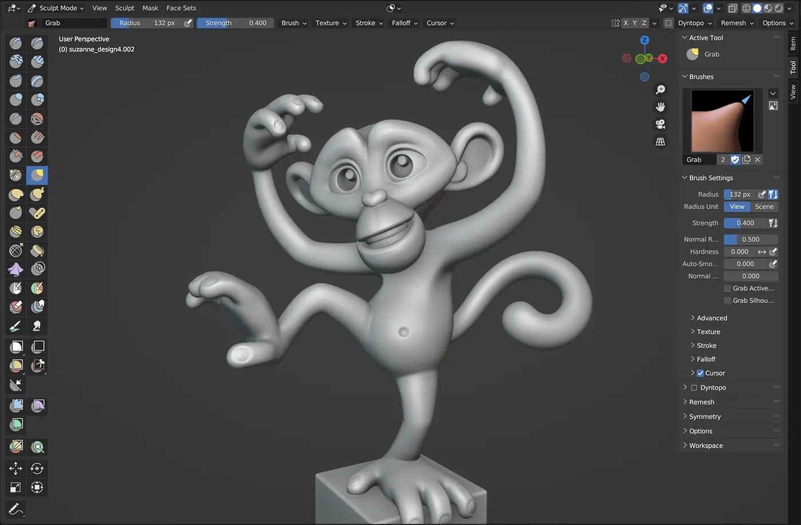

Add volume
Clay Strip
Builds up flat, blocky masses. The default block-in brush — most of a form starts here.
Sculpting Workspace · 50–65 minutes · Grades 7–12
Every lesson so far builds shape by moving individual vertices, edges, and faces. Sculpting flips that: you drag a brush across a dense surface and the mesh deforms underneath it, like real clay. It's the fastest way to get an organic, characterful shape down.
Finish line: a simple creature or rock form, blocked in entirely with sculpt brushes, cleaned up with a Voxel Remesh.
Sculpting needs a dense mesh — a two-sided cube has nowhere for a brush to push.
Workspace
A dense mesh, not a low-poly one
Click the Sculpting tab in the workspace bar, or use the same Object Mode dropdown you already know and choose Sculpt Mode. Sculpting works on the mesh's actual vertices — a bare cube (8 vertices) has almost nowhere for a brush to push. Start from an Ico Sphere (Shift+A → Mesh → Ico Sphere) with 2–3 subdivisions, or a mesh with a Multiresolution or Subdivision Surface modifier already applied.

Brushes
Five brushes cover most of a block-in
Add volume
Builds up flat, blocky masses. The default block-in brush — most of a form starts here.
Move without stretching
Moves a whole region of the surface as one soft blob, like grabbing real clay.
Settle the surface
Averages nearby geometry — hold Shift while using any other brush to smooth instead.
Cut a hard line
Pinches a sharp groove — eyelids, knuckles, the line where a jaw meets a neck.
Push out or in
Draw pushes the surface outward along its normal; Inflate rounds a region out evenly, good for muscle masses.
Click its icon in the left toolbar, or press its number key (X Draw is default; open the pie with V for the rest).
Drag in the header fields, or use F (Radius) and Shift+F (Strength) while hovering the viewport.
Brush Settings → Symmetry, or the X toggle in the header — every stroke sculpts both sides of a symmetrical form at once.
Dyntopo
The mesh grows detail where you need it
A fixed mesh runs out of detail — sculpt a deep groove into low-resolution geometry and it looks faceted, not carved. Dynamic Topology (Dyntopo) re-triangulates the surface under your brush in real time, so tight areas automatically get more geometry and open areas stay light.
Check the Dyntopo box in the Sculpt Mode header. Blender 4.0 dropped the old Ctrl+D default — bind your own in Preferences → Keymap if you want one back.
The Detail Size slider controls how fine the new triangles are — smaller means finer detail and a heavier mesh.
Dyntopo geometry gets messy over a long session. Remesh panel → Voxel Size → Remesh (or Ctrl+R) rebuilds the whole mesh at one even resolution.
Dyntopo rebuilds topology, which breaks a Multiresolution modifier's fixed level stack. Use one or the other on a given mesh, not both.
Masks
Protect what's already right
Once part of a sculpt is working, you don't want the next brush stroke to accidentally drag across it. Paint a Mask to lock that area down, or use a Face Set to name and isolate a region for other tools like Extract or Remesh.
Press M for the Mask brush, or open it from the toolbar, and paint over the area to protect.
Ctrl+I inverts the mask; Mask menu → Clear Mask removes it entirely.
Drag with the Face Set tool to paint a new named region, visible as flat-shaded color patches; hold Ctrl while dragging to expand an existing region instead of starting another.
Build
Hands on
Add an Ico Sphere with 2 subdivisions, enter Sculpt Mode, and enable Dyntopo with a medium Detail Size.
Use Clay Strip and Grab only, at a large Radius, to establish the overall silhouette — a head, a body mass, a limb. Don't touch small detail yet.
Once the silhouette reads correctly, run a Voxel Remesh to get one clean, even mesh to sculpt detail onto.
Switch to Crease and Smooth at a smaller Radius for eyelids, joints, and seams. Mirror with the X symmetry toggle if the form is symmetrical.
Mask any area you're happy with before adding more detail nearby, so a stray stroke can't ruin it.
Check